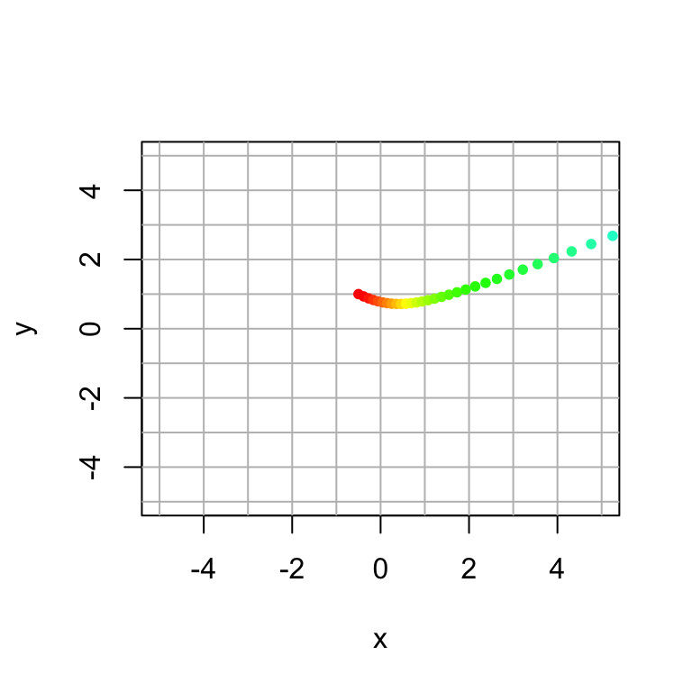
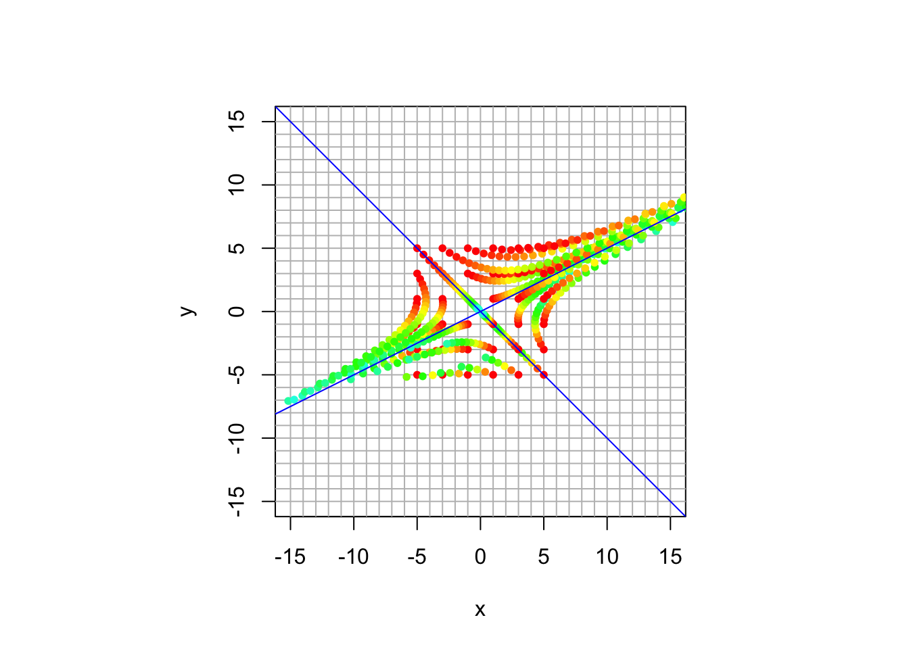

Vector 16 Dynamical Systems in 2D
Let \(A\) be a square \(n \times n\) matrix and let \(\mathsf{x}_0 \in \mathbb{R}^n\). A dynamical system is a sequence of vectors \(\mathsf{x}_0,\mathsf{x}_1,\mathsf{x}_2, \ldots, \mathsf{x}_t, \ldots\) where \[ \mathsf{x}_{t} = A \mathsf{x}_{t-1} = A^t \mathsf{x}_0 \quad \mbox{for} \quad t \geq 1. \] The sequence \(\mathsf{x}_0,\mathsf{x}_1,\mathsf{x}_2, \ldots, \mathsf{x}_t, \ldots\) is called the trajectory for initial vector \(\mathsf{x}_0\).
A dynamical system evolves over time. The long-term behavior is governed by the eigenvalues of matrix \(A\) We will look at some \(2 \times 2\) dynamical systems to develop some intuition about eigensystems.
16.1 Helper Function to Plot Dynamical Systems
I have written some code that makes some helpful plots. You should run this code chunk before the others.
16.2 Our first example
Let’s start by looking at the example from the video \[ A = \frac{1}{30} \begin{bmatrix} 31 & 4 \\ 2 & 29 \end{bmatrix}. \]
Here is some code that creates a single trajectory for \(0 \leq t \leq 30\) starting at \(\mathsf{x}_0 = \begin{bmatrix} -0.5 & 1 \end{bmatrix}.\) The colors of the points follow the rainbow ordering at \(t\) increases.
A = 1/30 * cbind(c(31,2),c(4,29))
x0 = c(-0.5,1)
# initialize the plot
plot(c(0),c(0),type="n",xlim=c(-5,5),ylim=c(-5,5),xlab="x",ylab="y")
abline(h=-5:5, v=-5:5, col="gray")
plot_traj(A,x0,30)
We get a more complete picture when we plot multiple trajectories at once. So I have written a helper function to plot the trajectories of a grid of points. It also plots the eigenspaces for the matrix. You can specify
- the matrix A
- the number of iterations
- the size of the square where the initial points lie
- the size of the plot
- the number of points along the side of the grid

Perhaps this system is best understood by comparing what we see with the eigenvector and eigenvalues.
## eigen() decomposition
## $values
## [1] 1.1 0.9
##
## $vectors
## [,1] [,2]
## [1,] 0.8944272 -0.7071068
## [2,] 0.4472136 0.7071068We can see that we have slight expansion along \([ 2, 1]^{\top}\) and slight contraction along \([-1,1]\). The long term behavior is an expansion in the direction of \([2, 1]^{\top}\).
16.3 Your Turn
Now it’s your turn to explore some dynamical systems.
- Create trajectory plots for each of these dynamical systems.
- Characterize the long-term behavior.
- What direction to vectors converge to?
- Do magnitudes increase? decrease? stabilize?
- Calculate the eigenvectors and eigenvalues and compare them to your plot.
- The eigensystem should tell the same story as your plot.
If your original plot is confusing, try changing the parameters (initial square size, plot size, number of grid points).
Here is some code for you to adapt for the examples.
'```{r, echo=TRUE}
A = cbind(c(1,0),c(0,1))
trajectory_plot(A, t=30, datamax=5, plotmax=15, numpoints=5)
eigen(A)
16.3.1 Example 1
\[ A = \frac{1}{60} \begin{bmatrix} 55& -8 \\ -1 & 53 \end{bmatrix} \]
16.3.2 Example 2
\[ A = \frac{1}{20} \begin{bmatrix} 24& -6 \\ 1 & 19 \end{bmatrix} \]
16.3.3 Example 3
\[ A = \frac{1}{110} \begin{bmatrix} 106& 12 \\ 6 & 92 \end{bmatrix} \]
16.3.4 Example 4
\[ A = \frac{1}{16} \begin{bmatrix} 17& -15 \\ 15 & 17 \end{bmatrix} \]